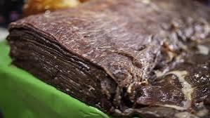

17.Morelos

- Platillo: Cecina de Yecapixtla
- Ingredientes: Filetes delgados de carne de res salados y secados al aire, limón, guarniciones.
- Historia: La técnica de curar carne tiene raíces prehispánicas, pero se fortaleció con la llegada de los españoles.
- Dato curioso: Yecapixtla es considerada “la capital mundial de la cecina” y realiza una feria anual dedicada a ella.